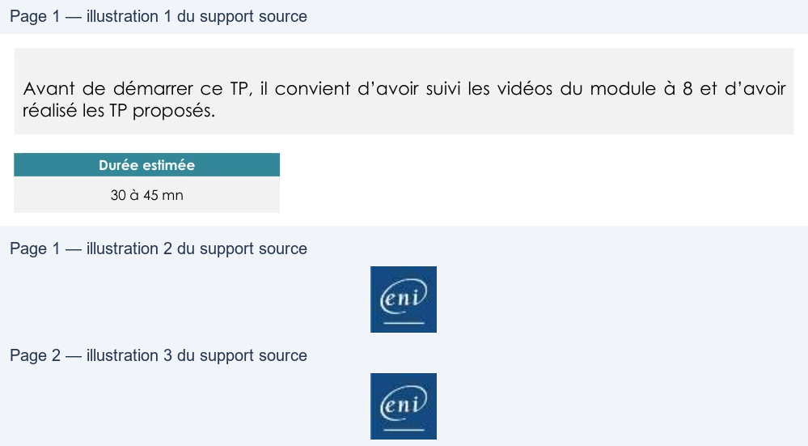

Transcription du document du Drive TSSR. La mise en forme est adaptée au Web ; les compléments IA du portail sont présentés séparément.
Titre exact du cours complet
TP du Module 08 – Mécanismes avancés de Linux et Bash
Avant de démarrer ce TP, il convient d’avoir suivi les vidéos du module à 8 et d’avoir
réalisé les TP proposés.
Durée estimée
30 à 45 mn
•
Lister tous les processus qui finissent par un d.
Le résultat sera stocké dans $HOME/process/daemons.txt.
•
Recherchez les fichiers dont le nom se termine par .conf à partir de la racine.
Cette recherche ne devra être effectuée que sur le système de fichier racine.
Le
résultat
sera
affiché
à
l'écran
tout
en
étant
stocké
dans
le
fichier
$HOME/resultats/fichiers.conf.
•
La commande précédente a duré un certain temps, comment connaître le temps
exact d’exécution de celle-ci ?
•
En une commande, renvoyez dans le fichier $HOME/resultats/compteur.txt le nombre
de fichiers trouvés au point 2, sans utiliser le fichier fichiers.conf.
Le résultat devra comporter uniquement ce nombre (ce résultat sera réutilisé dans des
scripts).
•
Reproduire toutes les actions précédentes, mais avec la création d’alias…
Une solution est proposée pour ce TP sous la forme d'un PDF commenté, disponible dans les
Page 1/2
© ENI – Tous droits réservés
BE
Titre exact du cours complet
ressources à télécharger.
Page 2/2
© ENI – Tous droits réservés
